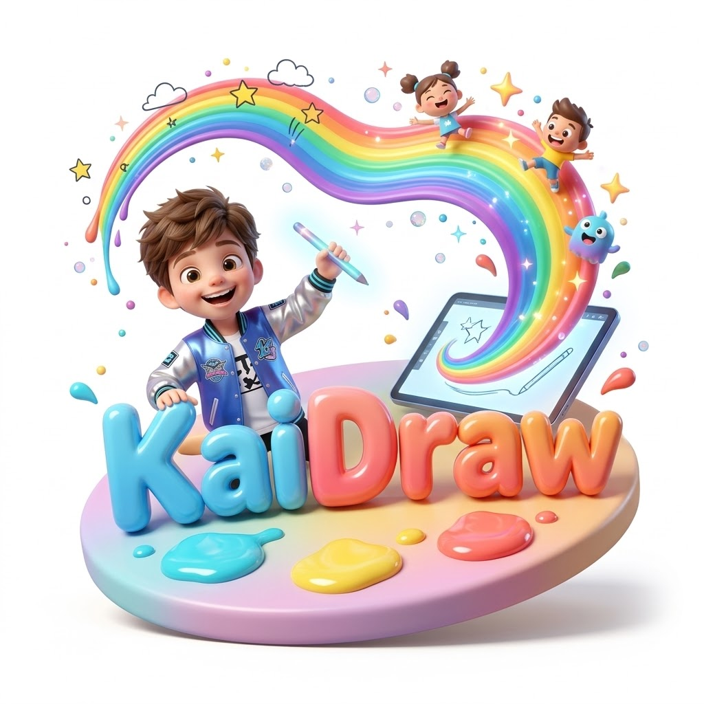

B.26.11.115 · Pro Edition
📄
新畫紙
✨
24px
📄 平滑白印刷紙 (80g)
100%

即將開立全新畫紙。系統將以堆疊順序移除最早的【畫紙 1】。
是否要把即將刪除的畫紙內容儲存成圖片檔案？
選擇純淨平滑印刷紙或大師級物理畫紙，即時更新畫紙底色與微粒
自動記錄最近 5 張畫作，支援隨時切換回去繼續繪製或開立新畫紙
智慧保留兒童筆觸輪廓 · 遞進生成新圖層 · 第一幀條件 2~3 秒微電影
以當前畫作為「第 1 幀」，AI 模型利用時間跨幀注意力，推理角色眨眼、尾巴擺動、樹葉微風與奇幻星芒。
支援連線本機/區域網 ComfyUI (:8188)、本地閘道器 (:8765) 或雲端 Serverless GPU
--listen 0.0.0.0 --enable-cors-header，iPad 在同個 Wi-Fi 下即可呼叫電腦顯示卡做真正的以圖生圖！
支援直接存入 iPad / iPhone 系統「相簿 (Photos)」
進入之後可以使用「相片轉換」功能，拍照或選取真實相片，智慧將相片轉換成繪製的底圖或輪廓線稿進行描摹。
輕鬆掌握從底圖匯入、分層手繪、AI 魔法賦能到動畫微電影的完整創作閉環
進入之後可以使用「相片轉換」功能，拍照或選取真實相片，智慧將相片轉換成繪製的底圖或輪廓線稿進行描摹。點選左側常用工具中的眼睛「👁️」可隨時顯示或隱藏底圖。
繪製時可以選擇各種不同的畫筆：濕畫水彩筆、傳統毛筆、油畫蠟筆、平頭馬克筆與精密噴筆。左側常用工具欄下方實時展示筆頭示範與常用色，搭配 Apple Pencil 壓感與繪製速度動態反饋真實筆觸音效。
隨時輕點左側常用工具「➕圖層」快捷鍵或頂欄「圖層」按鈕增加圖層，去進行不同圖層的疊加與分層創作，線稿、上色與修飾互不干擾，自由調控透明度與圖層順序。
右下角提供翻書摺頁效果，輕點拖曳即可翻開新增畫紙（支援多達 10 張畫紙切換回溯與自動存檔保護）；同時在「選紙」中可切換水彩紙、熟宣紙、雲彩紙等多種不同物理材質畫質。
輕點頂欄「AI魔法」按鈕進入魔法工坊，使用 AI 魔法對繪製的原作輪廓進行輔助最佳化，保留孩子的童趣線條與構圖，生成精美藝術大師級效果，並作為新圖層疊加。
在 AI 魔法工坊選擇「讓畫動起來」，可以讓完成的靜態圖片變成具有呼吸感與運鏡動效的 2~3 秒微電影動畫，讓創作躍然紙上。
可以將這些做成的圖片或動畫儲存到電腦當中或平板的相簿專案當中。輕點「存相簿」即可拍照儲存到相片庫，或直接下載高解析度檔案永久留存。
解鎖無限畫紙圖層 · 暢享 AI 魔法無限算力 · 專屬大師級物理材質